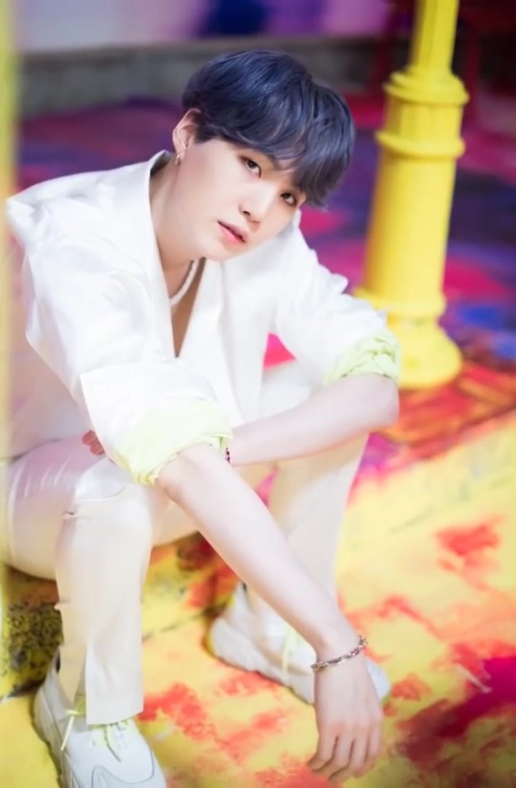

- RM>
- 슈가>
- 진>
- 제이홉>
- 지민>
- 뷔>
- 정국>
슈가는 누구인가?
슈가(본명: 민윤기[1], 閔玧其, 1993년 3월 9일 ~ )는 대한민국의 래퍼이자 작사가, 작곡가, 프로듀서이다. 대한민국의 보이 그룹 방탄소년단의 일원이며, 리드래퍼를 맡고 있다. 2017년에는 방탄소년단 래퍼 라인 중에서 처음으로 타 가수 앨범 프로듀싱에 참여하여 수상하였고,[2] 2016년에는 Agust D 명의로 첫 솔로 믹스테이프인 《Agust D》를 공개하였다. 그리고 2020년에는 두 번째 믹스테이프 《D-2》를 공개했다. 방탄소년단의 주요 음악 프로듀서 중 한 명인 그는 90곡 이상이 한국음악저작권협회에 등록되어 있다.[3] 방탄소년단과 라인프렌즈가 함께 만든 캐릭터, BT21 중에서 슈가는 슈키 (SHOOKY)라는 캐릭터를 직접 디자인했다. 